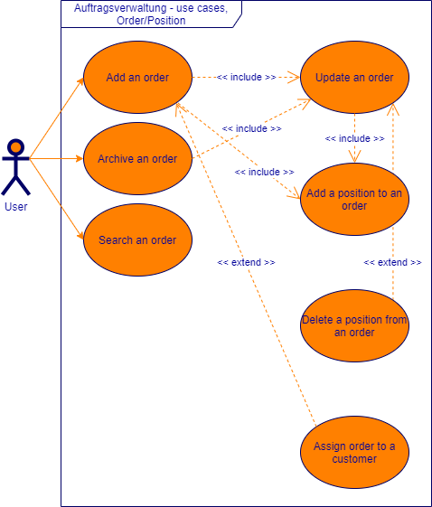
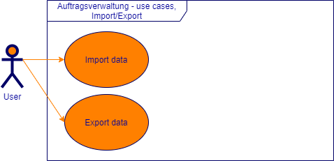
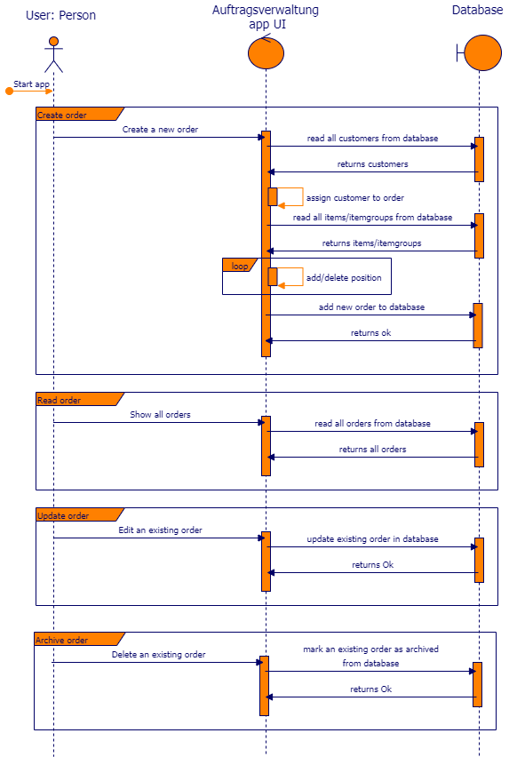
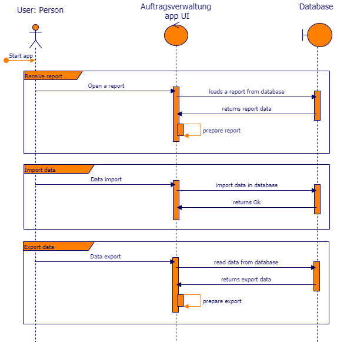

Introduction and Goals
Ziel dieses Projekts ist es, das in den letzten drei Jahren gelernte anzuwenden. Hauptsächlich wird der Inhalt der Module Programming Advanced I + II und Datenbanken Advanced bearbeitet. Das gesamte Projekt wurde parallel zum letzten Semester umgesetzt.
Requirements Overview
Use-Cases
Eine Übersicht aller Use-Cases für das Projekt 'OrderManager':
Kunden
| Nr | Role | Use-Case |
|---|---|---|
| K01 | Sachbearbeiter | Als Sachbearbeiter möchte ich Kunden mit Name, Strasse, PLZ, Ort, Mailadresse, Website und Passwort erfassen können, um eine saubere Verwaltung zu ermöglichen. |
| K02 | Sachbearbeiter | Als Sachbearbeiter möchte ich die erfassten Kunden bearbeiten können, um Fehler zu korrigieren. |
| K03 | Sachbearbeiter | Als Sachbearbeiter möchte ich die erfassten Kunden löschen können, um einen sauberen Datenbestand zu haben. |
| K04 | Sachbearbeiter | Als Sachbearbeiter möchte ich nach Kunden suchen können, um das Finden eines Kunden zu vereinfachen. |

Artikel und Artikelgruppen
| Nr | Role | Use Case |
|---|---|---|
| A05 | Sachbearbeiter | Als Sachbearbeiter möchte ich Artikel mit Bezeichnung, Preis und Artikelgruppe erfassen können, um eine saubere Verwaltung zu ermöglichen. |
| A06 | Sachbearbeiter | Als Sachbearbeiter möchte ich erfasste Artikel bearbeiten können, um Fehler zu korrigieren. |
| A07 | Sachbearbeiter | Als Sachbearbeiter möchte ich erfasste Artikel löschen können, um einen sauberen Datenbestand zu haben. |
| A08 | Sachbearbeiter | Als Sachbearbeiter möchte ich nach Artikeln suchen können, um das Finden eines Artikels zu vereinfachen. |
| A09 | Sachbearbeiter | Als Sachbearbeiter möchte ich Artikelgruppen mit Bezeichnung erfassen können, um die Verwaltung von Artikeln zu vereinfachen. |
| A10 | Sachbearbeiter | Als Sachbearbeiter möchte ich eine Hierarchie der Artikelgruppen erstellen können, um Artikelgruppen zu gruppieren. |
| A11 | Sachbearbeiter | Als Sachbearbeiter möchte ich Artikel den Artikelgruppen zuweisen können, um die Artikel zu gruppieren. |
| A12 | Sachbearbeiter | Als Sachbearbeiter möchte ich erfasste Artikelgruppen bearbeiten können, um Fehler zu korrigieren. |
| A13 | Sachbearbeiter | Als Sachbearbeiter möchte ich erfasste Artikelgruppen löschen können, um einen sauberen Datenbestand zu haben. |
| A14 | Sachbearbeiter | Als Sachbearbeiter möchte ich nach Artikelgruppen suchen können, um das Finden einer Artikelgruppen zu vereinfachen. |

Aufträge und Positionen
| Nr | Role | Use Case |
|---|---|---|
| P15 | Sachbearbeiter | Als Sachbearbeiter möchte ich Aufträge mit Datum und Kunde erfassen können, um einen Auftrag einfach zu identifizieren. |
| P16 | Sachbearbeiter | Als Sachbearbeiter möchte ich Positionen mit Nummern, Artikel und einer Anzahl erfassen können, um eine gegliederte Übersicht zum Auftrag zu erhalten. |
| P17 | Sachbearbeiter | Als Sachbearbeiter möchte ich erfasste Aufträge bearbeiten können, um Fehler zu korrigieren. |
| P18 | Sachbearbeiter | Als Sachbearbeiter möchte ich erfasste Positionen bearbeiten können, um Fehler zu korrigieren. |
| P19 | Sachbearbeiter | Als Sachbearbeiter möchte ich erfasste Aufträge archivieren können, um einen sauberen Datenbestand zu haben. |
| P20 | Sachbearbeiter | Als Sachbearbeiter möchte ich erfasste Positionen löschen können, um Fehler zu korrigieren. |
| P21 | Sachbearbeiter | Als Sachbearbeiter möchte ich nach Aufträgen suchen können, um das Finden eines Auftrages zu vereinfachen. |

Berichte
| Nr | Role | Use Case |
|---|---|---|
| B22 | Sachbearbeiter | Als Sachbearbeiter möchte ich einen Bericht erhalten, welcher die Anzahl Aufträge des letzten Quartals aufzeigt, um dies bei Terminen/Besprechungen vorlegen zu können, dies soll für die vergangenen drei Jahre möglich sein. |
| B23 | Sachbearbeiter | Als Sachbearbeiter möchte ich einen Bericht erhalten, welcher die Anzahl verwaltete Artikel des letzten Quartals aufzeigt, um dies bei Terminen/Besprechungen vorlegen zu können, dies soll für die vergangenen drei Jahre möglich sein. |
| B24 | Sachbearbeiter | Als Sachbearbeiter möchte ich einen Bericht erhalten, welcher die Durchschnittliche Anzahl Artikel pro Auftrag des letzten Quartals aufzeigt, um dies bei Terminen/Besprechungen vorlegen zu können, dies soll für die vergangenen drei Jahre möglich sein. |
| B25 | Sachbearbeiter | Als Sachbearbeiter möchte ich einen Bericht erhalten, welcher den Umsatz pro Kunde des letzten Quartals aufzeigt, um dies bei Terminen/Besprechungen vorlegen zu können, dies soll für die vergangenen drei Jahre möglich sein. |
| B26 | Sachbearbeiter | Als Sachbearbeiter möchte ich einen Bericht erhalten, welcher den Gesamtumsatz des letzten Quartals aufzeigt, um dies bei Terminen/Besprechungen vorlegen zu können, dies soll für die vergangenen drei Jahre möglich sein. |

Export
| Nr | Role | Use Case |
|---|---|---|
| E27 | Sachbearbeiter | Als Sachbearbeiter möchte ich die Kundendaten importieren können, um bereits erfasste Daten aus anderen Systemen zu übernehmen. |
| E28 | Sachbearbeiter | Als Sachbearbeiter möchte ich die Kundendaten exportieren können, um im System erfasste Daten austauschen zu können. |

Sequence Diagrams
Sequenzdiagramm zu den Anforderungen für die Kundenverwaltung.

Sequenzdiagramm zu den Anforderungen für die Artikel- und Artikelgruppenverwaltung.

Sequenzdiagramm zu den Anforderungen für die Auftrags- und Positionsverwaltung. 
Sequenzdiagramm zu den Anforderungen für die Berichtsverwaltung und den Import/Export. 
Quality Goals
Das Projektteam hat die folgenden Qualitätsziele für das Projekt erarbeitet.
- Die Anwendung soll auf dem bisher im Unterricht gelernten basieren und aufbauen.
- Die Anwendung soll einfach erweiterbar und anpassbar sein.
- Die Business Logik soll eine Testabdeckung von min. 50% haben.
Stakeholders
Die folgenden Stakeholder wurden zu dieser Anwendung identifiziert.
| Name | Funktion |
|---|---|
| ZbW Zentrum für berufliche Weiterbildung | Auftraggeber, Empfänger des Endprodukts |